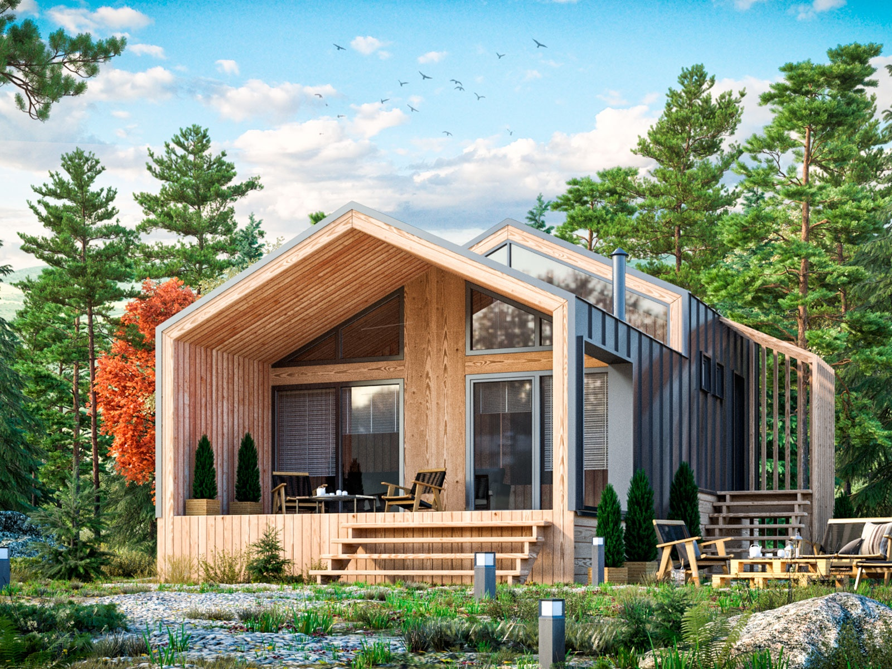
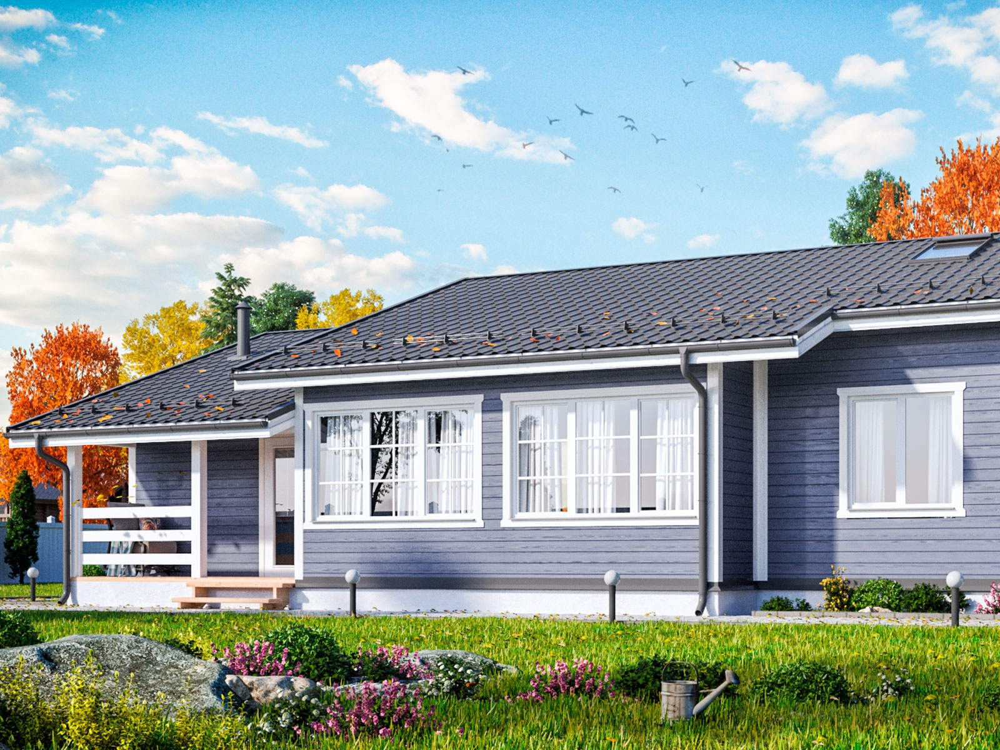

СИП Творец · Санкт-Петербург
Дома из СИП-панелей
Производим панели и строим дома в Санкт-Петербурге и области. Выберите проект и обсудите комплектацию.
Посмотреть домаПРИМЕРЫ РЕШЕНИЙ
Проект, фасад и интерьер
Посмотрите разные дома и планировки. Обсудим проект и состав работ под ваш участок.

Дом с панорамными окнами
СИП Творец · Санкт-Петербург
Дом с панорамными окнами
Посмотрите разные дома и планировки. Обсудим проект и состав работ под ваш участок.
Обсудить строительство